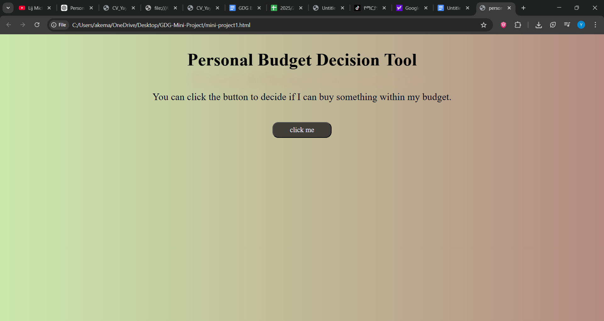

The Personal Budget Tool is a web development project built using HTML, CSS, and JavaScript. It is designed to help users organize and manage their personal budgets.
Technologies Used
- HTML for page structure
- CSS for styling
- JavaScript for functionality